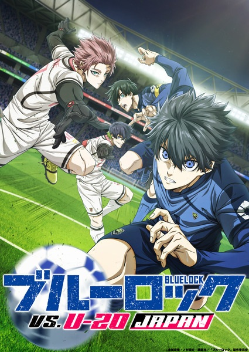
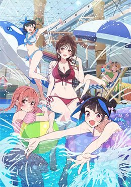

Gojo Wakana es un estudiante que quiere convertirse en maestro del arte de crear muñecas Hina. Aunque adora ese arte, no sabe socializar… hasta que conoce a Marin Kitagawa.

Blue Lock vs. U-20 Japan
La batalla definitiva entre los mejores delanteros del Blue Lock y el equipo sub-20 de Japón.

Kanojo, Okarishimasu (Rent-A-Girlfriend)
Kazuya alquila una novia falsa, pero sus sentimientos se vuelven reales con cada cita. ¡La temporada 4 comienza con más enredos románticos!